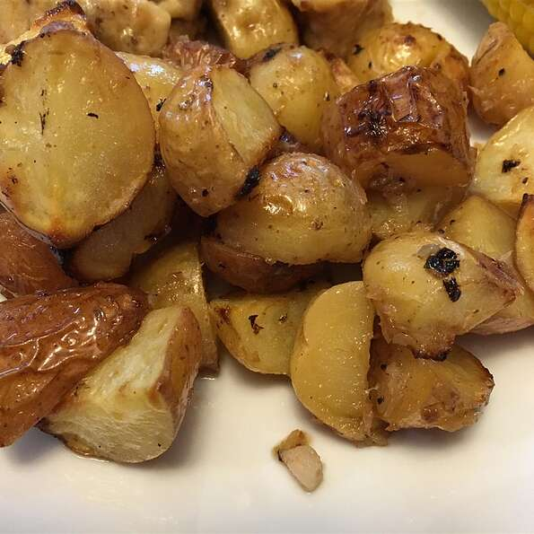

Lemon Horseradish New Potatoes

These are new potatoes served with a zesty sauce. This has been a longstanding favorite at our house. If you are in a hurry, just boil the potatoes and serve with the sauce.
All rights reserved to allrecipes.com
Ingredients
- ¼ cup butter
- ½ teaspoon salt
- ¼ teaspoon pepper
- 2 tablespoons prepared horseradish
- 2 tablespoons fresh lemon juice
- 1½ pounds small new potatoes, unpeeled
Steps
- Preheat oven to 350 degrees F (175 degrees C).
- Melt butter in a 2 quart casserole dish in the oven. Stir in salt, pepper, horseradish and lemon juice. Place potatoes in dish and toss to coat with butter mixture.
- Cover and bake in preheated oven for 1 hour, or until potatoes are tender.
Home